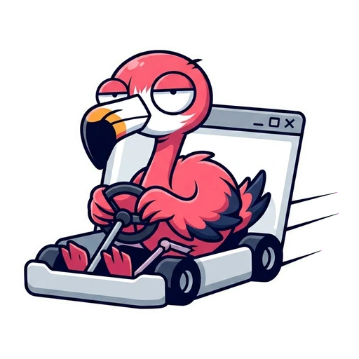
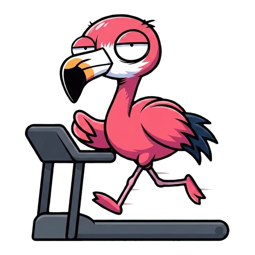
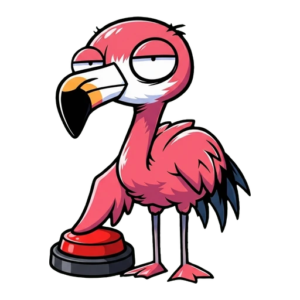
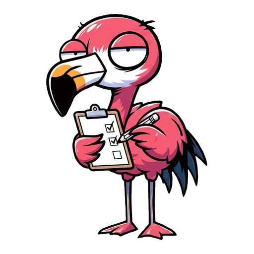
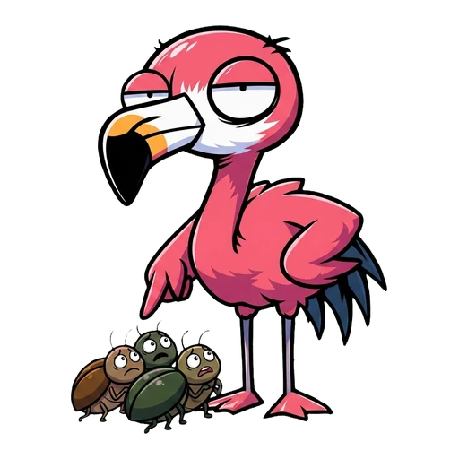

one file · zero dependencies · bun 1.4
Point it at any URL. It reports what is actually clickable, with coordinates, and whether the last click did anything.

the loop
Every action returns the new page. changed: false means try something else. No guessing, no DOM dump.

loop
Every action returns the new page state, so the next step is a read, not a guess.
sees
No DOM dump. One line per interactive element, with the coordinates that work.

clicks
Walks the whole page and skips anything labelled destructive.

checks
Watches DOM, focus, navigation and network to tell a real response from a dead one.
types
Types into inputs, then reads them back to confirm the value actually stuck.
breaks
Double-clicks, reloads mid-request, stresses the page. Finds what one clean click misses.
size
Packed size straight from npm, before Playwright or Puppeteer pull their browser binaries down on top.
Real browser on both backends: system WebKit on macOS, or Chrome if you point it at one. How 17 packages were replaced no browser binaries, ever ✦
the payload
Compact text by default. One line per element with coordinates, so a thirty-step loop still fits in context.
http://localhost:3000 | "Demo" | 1280x800 elements 6 (94,171) button#cta "Get Started" (238,171) button#deadcta "Learn More" blocked 2 behind div#cookiewall changed true

what it finds
Dead buttons, blocked clicks, fields that drop input, overflow and broken assets. Then it tries to break the page on purpose to surface race conditions.